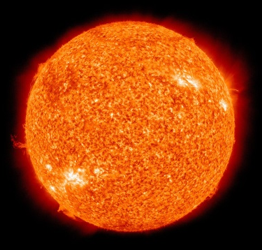
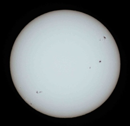
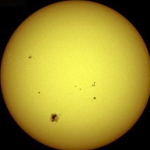

| Среднее расстояние от Земли | 1,496⋅10^11 м (8,31 световых минут) 1 а. е. |
| Средний горизонтальный параллакс | 8,794 |
| Видимая звёздная величина (V) | −26,74m |
| Абсолютная звёздная величина | 4,83m |
| Спектральный класс | G2V |
| Расстояние от центра Галактики | ~2,5⋅10^20 м (26 000 св. лет) |
| Расстояние от плоскости Галактики | ~4,6⋅10^17 м (48 св. лет) |
| Галактический период обращения | 2,25-2,50⋅10^8 лет |
| Скорость | ~2,2⋅10^5 м/с (на орбите вокруг центра Галактики) 19,4 км/с(относительно соседних звёзд) |
| Средний диаметр | 1,392⋅10^9 м (109 диаметров Земли) |
| Экваториальный радиус | 6,9551⋅10^8 м |
| Длина окружности экватора | 4,37001⋅10^9 м |
| Полярное сжатие | 9⋅10^−6 |
| Площадь поверхности | 6,07877⋅10^18 м² (11 918 площадей Земли) |
| Объём | 1,40927⋅10^27 м³ (1 301 019 объёмов Земли) |
| Масса | 1,9885⋅10^30 кг (332 940 масс Земли) |
| Средняя плотность | 1,409 г/см³ |
| Ускорение свободного падения на экваторе | 274,0 м/с² (27,96 g) |
| Вторая космическая скорость (для поверхности) | 617,7 км/с (55,2 земных) |
| Эффективная температура поверхности | 5780 К |
| Температура короны | ~1 500 000 К |
| Температура ядра | ~15 700 000 К |
| Светимость | 3,828⋅10^26 Вт (~3,75⋅10^28 Лм) |
| Энергетическая яркость | 2,009⋅10^7 Вт/(м²·ср) |
| Наклон оси | 7,25° (относительно плоскости эклиптики) 67,23° (относительно плоскости Галактики) |
| Прямое восхождение северного полюса | 286,13° (19 ч 4 мин 30 с) |
| Склонение северного полюса | +63,87° |
| Сидерический период вращения внешних видимых слоёв (на широте 16°) | 25,38 дней (25 дней 9 ч 7 мин 13 с) |
| (на экваторе) | 25,05 дней |
| (у полюсов) | 34,3 дней |
| Скорость вращения внешних видимых слоёв (на экваторе) | 7284 км/ч |
| Водород | 73,46 % |
| Гелий | 24,85 % |
| Кислород | 0,77 % |
| Углерод | 0,29 % |
| Железо | 0,16 % |
| Неон | 0,12 % |
| Азот | 0,09 % |
| Кремний | 0,07 % |
| Магний | 0,05 % |
| Сера | 0,04 % |

Снимок Солнца в условном цвете, ультрафиолетовый спектр (длина волны 30,4 нм), сделан в 2010 году

Снимок солнца в видимом свете с солнечными пятнами и потемнением к краю, сделан в 2013 году

Нажми ↑ снова или ✕, чтобы закрыть панель